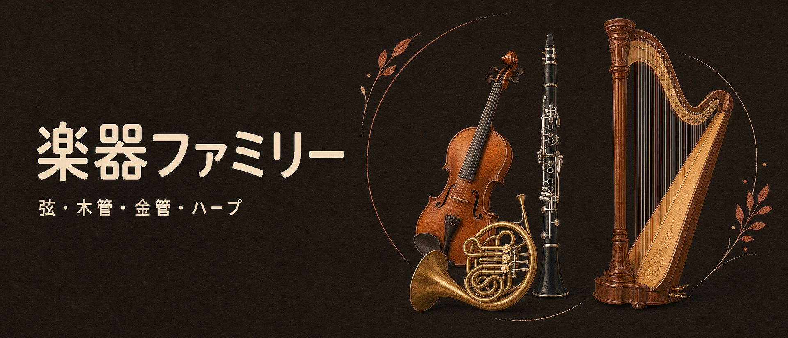
弦・木管・金管・ハープ——
4つの家族を、構造から比べる
オーケストラの楽器を家族ごとに1ページずつ。どういう仕組みで音が出るか（構造）、家族の中でどう違うか（比較）、音域はどこからどこまでか（チャート）を、模式図と写真で追います。各ページの後半には、その科に効くヴォイシングと低音の置き方（ローインターバルリミット）のルールも足しました。楽典・和声の土台は、最後の「学習」タブに分けてあります。数値と「勘所」は、管弦楽法の原典3冊から引いたものです。出典が確認できた楽器には、試聴プレイヤーも付けました——各タブの「音で聴く」から実際の音色を聴けます。
出典：ビドール『近代管弦楽法』（1904）／フォーサイス『Orchestration』（1914）／リムスキー＝コルサコフ『管弦楽法原理』。原典と現代の標準が食い違う所は、その旨を注記しています。
弦楽器
擦弦楽器——弓でこする4人家族ヴァイオリン、ヴィオラ、チェロ、コントラバス。作りはほぼ同じで、大きさだけが違う4兄弟です。胴が大きいほど低い音——この単純な関係が、家族全員の性格を決めています。
音の出る仕組み
弦そのものの音は小さいので、胴が「拡声器」の役目をします。表板と裏板の間に立つ小さな柱（魂柱）と、表板の裏に貼られた棒（バスバー）が、振動を板全体・胴全体へ行き渡らせる要です。
音で聴く
ヴァイオリン
半音階のロングトーン（arco・mf、D線、D4–B4）。各音を持続して弾いたサンプル集です。約71秒。
出典：University of Iowa Musical Instrument Samples（Lawrence Fritts）。ページ表示用にMP3へ変換しています。
ヴィオラ
半音階のロングトーン（arco・mf、C線、C3–B3）。各音を持続して弾いたサンプル集です。約62秒。
出典：University of Iowa Musical Instrument Samples（Lawrence Fritts）。ページ表示用にMP3へ変換しています。音高ラベルは原典ファイル名の表記に基づきます（独立した音高照合は未実施）。
チェロ
半音階のロングトーン（arco・mf、C線、C2–A♭2）。1736年製ストラディヴァリウスで収録されたもの（Iowaの楽器情報より）です。約81秒。
出典：University of Iowa Musical Instrument Samples（Lawrence Fritts）。ページ表示用にMP3へ変換しています。音高ラベルは原典ファイル名の表記に基づきます（独立した音高照合は未実施）。
コントラバス
半音階のロングトーン（arco・mf、E線、E1–B1）。各音を持続して弾いたサンプル集です。約33秒。
出典：University of Iowa Musical Instrument Samples（Lawrence Fritts）。ページ表示用にMP3へ変換しています。音高ラベルは原典ファイル名の表記に基づきます（独立した音高照合は未実施）。
弦の4楽器すべてに試聴が付きました。いずれもIowaのロングトーン集です。
構造の図
図1｜ヴァイオリンの上面——部品の名前
断面で見る——胴の中の2つの部品
魂柱は高音側（E線の下あたり）、バスバーは低音側（G線の下）にあります。どちらも外からは見えませんが、この2つがないと胴は鳴りません。
図2｜4楽器の大きさ比べ（全長）
コントラバスはヴァイオリンの3倍以上の長さ。胴の大きさと音の高さが反比例するのが一目で分かります。
音域チャート（実音）
横軸は音高で、C1〜C8の目盛りで示しています。バーは実音の範囲です。ヴァイオリンの上限は原典の最大値で、管弦楽では最高部は危険域として内側で書くのが原則（ビドール）。ヴィオラの上限は奏者・楽器で幅があるため開いた形にしています。コントラバスの記音は実音の1オクターブ上。
比較——調弦
| 楽器 | 調弦（低い弦から） | 間隔 | 備考 |
|---|---|---|---|
| ヴァイオリン | G3 – D4 – A4 – E5 | 完全5度 | 4本とも5度で統一 |
| ヴィオラ | C3 – G3 – D4 – A4 | 完全5度 | ヴァイオリンの規則を5度下げて使う |
| チェロ | C2 – G2 – D3 – A3 | 完全5度 | 音域は人声に重なる |
| コントラバス | E1 – A1 – D2 – G2 | 完全4度 | 弦では唯一の4度調弦。記音は実音のオクターブ上。現代は5弦やC延長管でC1まで下がる |
比較——できること・できないこと
| 技法 | ヴァイオリン | ヴィオラ | チェロ | コントラバス |
|---|---|---|---|---|
| 重音 | ○ 開放弦を含むものは容易。ただし完全5度は音程が不正確になりがち | ○ ヴァイオリンとほぼ同じ。手の伸びは狭く、同一弦は完全4度まで | ○ 開放弦なしの2度・オクターブは管弦楽では避ける | △ 3度・完全4度・完全5度は容易。6度以上は片方が開放弦でないと不可 |
| ピッツィカート | ○ 有効域はG線〜E線の高音まで。速さの上限は16分音符で♩=104が目安 | ○ 上限はA線のオクターブまで | ○ 上下両方向のアルペジオも良好。鋭い音の上限はG♯〜B♭あたり | ○ 全音域で可。ただし速いピッツは奏者が疲弊するので、プルトを分けて交互に弾かせる |
| ハーモニクス | ○ 自然（開放弦の第2〜6倍音）＋人工も可 | ○ ヴァイオリンを5度移行。低い音は自然倍音のみ | ○ 自然／人工ともヴァイオリン・ヴィオラより少し広い | △ 自然倍音のみ。人工倍音は指の開きが要り不可能 |
| 弱音器 | ○ 音量が落ち、性格が濃くなる | ○ | ○ | △ フランスでは使わない慣行（ビドール）。釣合いのため人数を絞る指示で代える |
比較の勘所（原典から）
ヴィオラは「音高に対して大きさが足りない」楽器。その音高に釣り合う胴は本来もっと大きくあるべきで、中音域の独特の性格はそこから来ます。個体差も弦楽器中最大で、ウォルフ音（特定の音だけうなる現象）はほぼ全個体に1〜2個あるとフォーサイスは書いています。
チェロの音域は人声に重なります。第1弦（A線）は明るく「胸声」のよう。反対に、人声の音域を超えた部分（ヴァイオリンの最高音より上、コントラバスの最低音より下）は表現力と温かさを失う——これが彼の物差しです。
チェロとコントラバスは「対」で扱うのが原則。チェロだけでは低音が不十分、コントラバスだけでは響きが鈍く音程も不正確。両者が合わさると、澄んで堅固で深い「最良の基音」になります。コントラバスの低音は倍音の都合で、輪郭よりも「圧」で聞こえる音です。
この科のルール——ヴォイシングと低音の置き方
楽器そのものの知識の次は、「どう重ねるか」の規則です。弦の重ねの中心はオクターブで、低音側ほど間隔を広く取るのが原則。下のLIL図（ローインターバルリミット＝低音域で置ける音程の下限）には、チェロ／コントラバスの低音区間に印を付けました。
重ねの常套はオクターブ。Vn I/II、Vn/Vla、Vla/Vc、Vc/Cb のオクターブ重ねが弦のヴォイシングの背骨です。極端な高音の旋律は1オクターブ下、極端な低音は1オクターブ上で重ねて、響きを中心へ寄せます。
短い和音（3〜4音）は Vn I/II・ヴィオラ中心に。チェロはコントラバスと一緒に最低音を担います。厳密な声部進行よりも、鳴らしやすさを優先してよい場面です。
コントラバスは和音の最下声として、単独かオクターブ重ねが基本。チェロとコントラバスの間に狭い音程を置くと濁ります——低音では2音の周波数差が小さく、うなりとして聞こえるためです。
ピッツィカートの低音は減衰が速い。低音の土台をピッツで長く保たせようとせず、短い合いの手やリズムの刻みに使うのが無難です。
図｜ローインターバルリミット——この高さより下では、この音程を置かない
色の付いた範囲が「置かない方がよい」低音側です。下限の目安は、米海軍の音楽教科書系の和声学テキスト「Low Interval Limits」の伝統的な制限（最下声部とその上の声部の間）で、絶対の法則ではなく目安です。実務の合言葉は「バス譜表の真ん中の線より下では、間隔は協和に、できれば10度・5度・8度で」。破線の帯は、この科の低音楽器（Vc／Cb）の区間です。
写真で見る


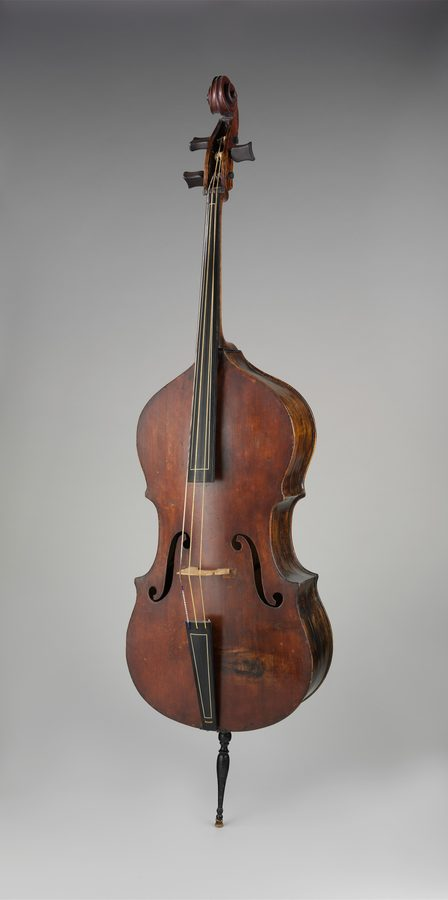
木管楽器
管の中の空気を鳴らす——発音体は3種類「木管」と言っても、現代のフルートは金属製です。家族の分け方は素材ではなく、息を音に変える仕組み（発音体）と管の形。この2つの組合せが、音色も得意技も決めます。
音の出る仕組み——発音体は3種類
エアリード（フルート族）
リードは無し。細い息の帯を管の縁（エッジ）に当てると、息が内と外に振り分けられて空気が振動します。歌口に唇を当てるだけの、いちばん原始的な仕組みです。
シングルリード（クラリネット族）
葦の薄い板が1枚。息でリードがマウスピースに打ち付けられて開閉し、空気の流れを断続させます。サクソフォンもこの仲間です。
ダブルリード（オーボエ族・ファゴット）
葦の板が2枚向かい合わせ。息で2枚がぶつかり合って振動します。リードは奏者が自分で削って作る消耗品で、その出来がそのまま音に出ます。
音で聴く
Iowaのサンプルは、半音階を1音ずつ持続して吹いたロングトーン集（mf）です。楽器ごとの音域と音色の違いを、そのまま聴き比べられます。
フルート
半音階のロングトーン（non-vibrato・mf、C5–B5）。約33秒。
出典：University of Iowa Musical Instrument Samples（Lawrence Fritts）。
アルトフルート
半音階のロングトーン（mf、C4–B4）。通常のフルートより低い同族楽器です。約50秒。
出典：University of Iowa Musical Instrument Samples（Lawrence Fritts）。
バスフルート
半音階のロングトーン（mf、C3–B3）。フルート族の低音側です。約58秒。
出典：University of Iowa Musical Instrument Samples（Lawrence Fritts）。
オーボエ
半音階のロングトーン（mf、C4–B4）。約41秒。
出典：University of Iowa Musical Instrument Samples（Lawrence Fritts）。ページ表示用にMP3へ変換しています。音高ラベルは原典ファイル名の表記に基づきます（独立した音高照合は未実施）。
コールアングレ
管弦楽の中のコールアングレ——ドヴォルザーク交響曲第9番「新世界より」第2楽章（全曲11分34秒）。冒頭の有名なソロで知られる楽章全体の録音で、単独サンプルではありません。コールアングレのソロは、39秒辺りから聴けます。
出典：Musopen由来、パブリックドメインとして扱われている音源。ページ表示用にMP3へ変換しています。
E♭クラリネット
半音階のロングトーン（mf、C5–B5）。約32秒。
出典：University of Iowa Musical Instrument Samples（Lawrence Fritts）。
B♭クラリネット
半音階のロングトーン（mf、D3–B3・実音）。約51秒。
出典：University of Iowa Musical Instrument Samples（Lawrence Fritts）。ページ表示用にMP3へ変換しています。音高ラベルは原典ファイル名の表記に基づきます（独立した音高照合は未実施）。
バスクラリネット
半音階のロングトーン（mf、B2–B♭3）。約58秒。
出典：University of Iowa Musical Instrument Samples（Lawrence Fritts）。
バセットホルン
モーツァルト「ディヴェルティメント第2番 K.439b」第2楽章の抜粋。約1800年ウィーン製 Griesbacher の実物による演奏です。バセットホルンは、1:37辺りから聴けます。
出典：St Cecilia's Hall、演奏 Calum Robertson。CC BY 3.0。元は動画（WebM）で、音声のみを抽出しMP3へ変換しています。
ファゴット
半音階のロングトーン（mf、C3–B3）。約26秒。
出典：University of Iowa Musical Instrument Samples（Lawrence Fritts）。ページ表示用にMP3へ変換しています。音高ラベルは原典ファイル名の表記に基づきます（独立した音高照合は未実施）。
ピッコロ／コントラファゴットは、ファイルは手元にあるものの台帳で出典が確認できていないため、今回も見送りました。プレイヤーの無い楽器は、無理に埋めていません。
構造の図
図1｜管の形と「吹き上がり」——クラリネットだけ12度
閉管では偶数倍音が出ないため、倍音は1・3・5…と奇数だけが強くなります。次の吹き上がり先がオクターブではなく12度（オクターブ＋5度）になるのはそのためで、クラリネットの音域の真ん中に「ブレイク」と呼ばれる運指の断層があるのもこの構造の帰結です。同じ長さでも、クラリネットはオーボエの半分の管長で同じ低音が出せます（フォーサイス）。
図2｜キイの仕組み——遠くの孔を、カップで塞ぐ
ベーム式の考え方は「孔の位置を指の都合ではなく、音響学的に正しい場所に置く」こと。届かない孔はロッドで連動するカップキイに塞がせます。この機構革命で、木管は全調を均等に吹けるようになりました（フォーサイス）。
音域チャート（実音で統一）
移調楽器もすべて実音の位置に置いています。ピッコロの最低音は、現代の標準楽器ではD（ビドールの時代のC管とは違う点に注意）。コントラファゴットの現代の標準（ヘッケル式）は実音B♭0まで下ります。
比較——仕組みの4項目
| 楽器 | 発音体 | 管の形 | オーバーブロー先 | 移調 |
|---|---|---|---|---|
| ピッコロ | エアリード | 円筒 | 8度 | 実音は記音の8度上 |
| フルート | エアリード | 円筒 | 8度 | なし |
| オーボエ | ダブルリード | 円錐 | 8度 | なし |
| コールアングレ | ダブルリード | 円錐 | 8度 | in F（実音は記音の完全5度下） |
| クラリネット | シングルリード | 円筒・閉管 | 12度 | in B♭（実音は記音の長2度下） |
| ファゴット | ダブルリード | 円錐 | 8度 | なし |
| コントラファゴット | ダブルリード | 円錐 | 8度 | 実音は記音の8度下 |
比較の勘所（原典から）
クラリネットは1本で「3つの声」を持ちます。低音のシャルモーは劇的だが控えめで弱いので、主題の中心にせず経過的に使う。中音のクラリオン、高音のアルティシモで性格ががらりと変わる楽器です。一方で、管楽器で唯一、本物のpp（エコー効果）まで落とし切れるのもクラリネットです。
ファゴットは理想的な「背景楽器」——ただし覆われると個性が消えます。静かで控えめな音色はクラリネットと並ぶ背景向きですが、軽いスタカートでは特に「出し抜かれ」やすい。ビゼー『アルルの女』では、ファゴットの対位パートがほぼ聞こえなくなる例が引かれています。
息の消費量は正反対の両極があります。オーボエは全管楽器で最小クラスで、フルートよりはるかに長いフレーズが持ちます。フルートは歌口から空気が逃げるため消費が大きく、長いアンダンテでは呼吸の計画が要ります。ダブルリード楽器は、リードの状態に音が左右される点も書き手の前提です。
この科のルール——ヴォイシングと低音の置き方
木管のヴォイシングは「2本ずつの同族重ね」と「異種の混合」が基本です。低音側は、ファゴット／コントラファゴット／バス・クラリネットという低音楽器同士の距離が勝負になります。下のLIL図には、その低音楽器の区間に印を付けました。
同族の重ねと、異種の混合を使い分ける。同じ楽器2本の重ねは溶け合い、ホルンとファゴットの橋渡しのような異種の混合は、科と科をつなぐ糊になります。
ファゴットを内声部で埋もれさせない。覆われると個性が消える楽器です。背景に回す時も、輪郭が残る置き方を選びます。
クラリネットのシャルモー域は、主題の中心に置かず経過的に。低音域・中音域・高音域の3声部の性格差が、そのままヴォイシングの制約になります。
ダブルリード同士のユニゾンは、音程が揺れやすい。リードの状態で音程が動くため、ぴたりと合う前提で書かない方が安全です。
低音楽器同士で狭い音程を作らない。バス・クラリネットの低音は本領ですが、ファゴットと近接させると濁ります。低音同士は広く離すのが原則です。
図｜ローインターバルリミット——この高さより下では、この音程を置かない
色の付いた範囲が「置かない方がよい」低音側です。下限の目安は、米海軍の音楽教科書系の和声学テキスト「Low Interval Limits」の伝統的な制限（最下声部とその上の声部の間）で、絶対の法則ではなく目安です。実務の合言葉は「バス譜表の真ん中の線より下では、間隔は協和に、できれば10度・5度・8度で」。破線の帯は、この科の低音楽器（Fg／C-Fg／バス・クラリネット）の区間です。
写真で見る
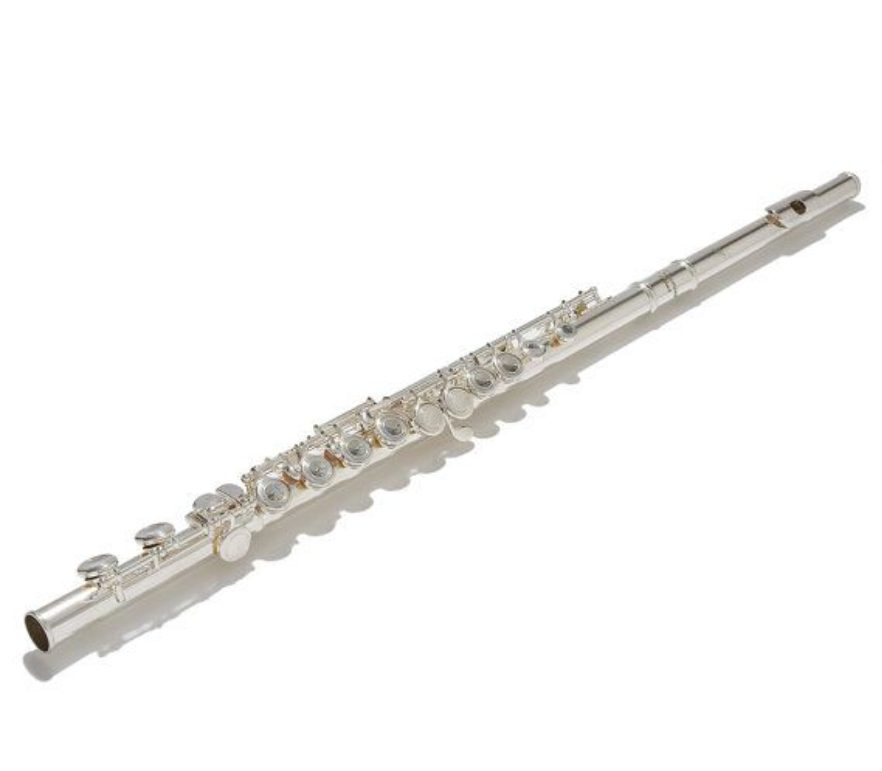
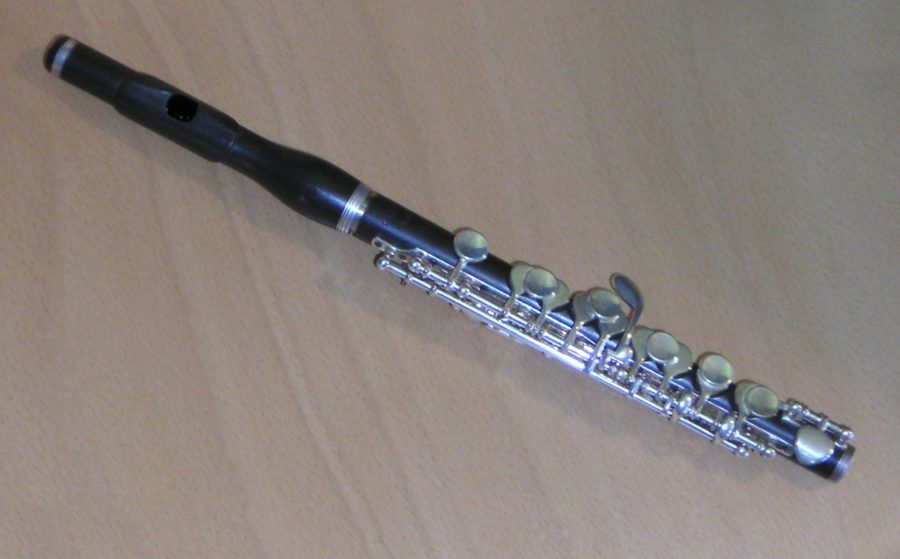
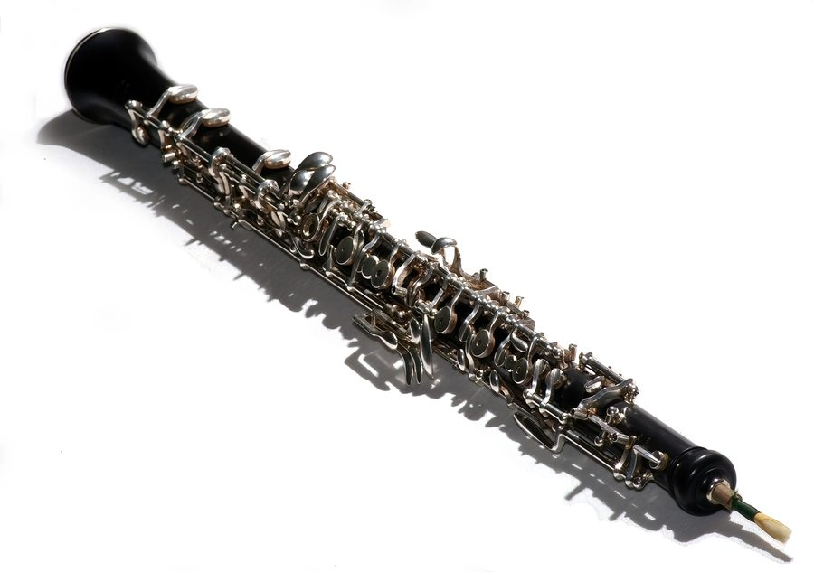
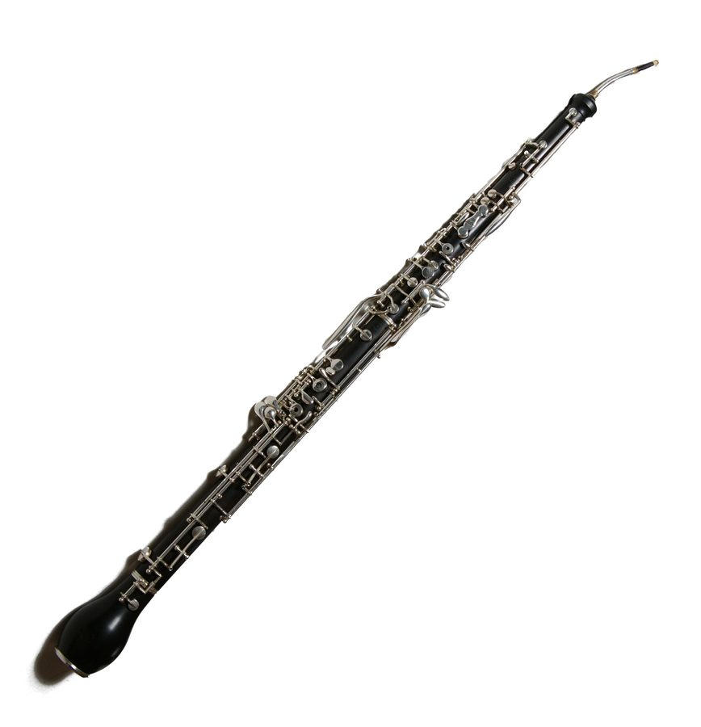
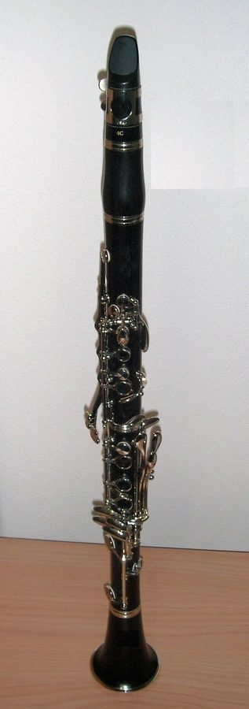
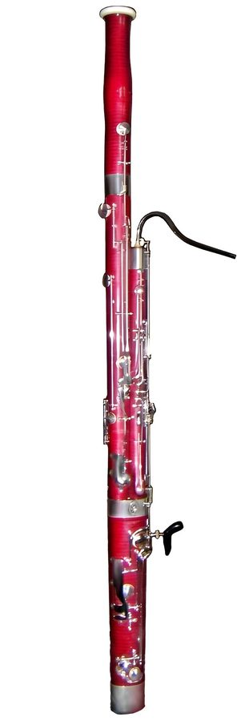
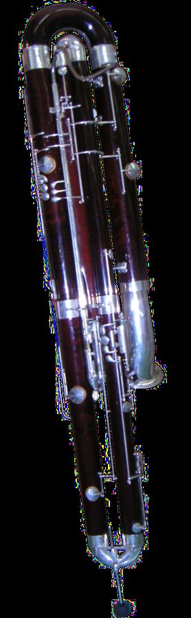
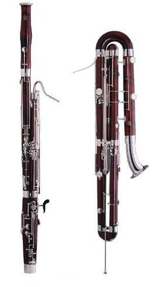
金管楽器
リードは自分の唇——管の長さが音を決める金管にはリードがありません。振動するのは奏者自身の唇（アンブシュア）で、マウスピースはそれを受ける器です。唇が選べるのは「倍音列」という決まった音の階段だけで、バルブやスライドは、その階段ごと管を延ばして下げる装置です。
音の出る仕組み
1本の管で出せる音は、基音の整数倍の周波数を持つ「自然倍音」の列だけです（下の図1）。唇の締め方で列の何段目を鳴らすか選び、足りない半音はバルブ／スライドで管長を変えて埋めます。実際に使えるのは概ね第2倍音から上で、基音まで下れるのはテューバ類の大口径の楽器だけです（ビドール）。
音で聴く
ホルン
半音階のロングトーン（mf、C4–B4）。各音を持続して吹いたサンプル集です。約33秒。
出典：University of Iowa Musical Instrument Samples（Lawrence Fritts）。ページ表示用にMP3へ変換しています。
オフィクレイド （歴史的金管）
“The Bluebells of Scotland”の抜粋（約15秒）。19世紀中頃ロンドン、Charles Pace 製の実物による演奏です。
出典：St Cecilia's Hall、演奏 Tony George。CC BY 3.0。ページ表示用にMP3へ変換しています。
トランペット
半音階のロングトーン（ヴィブラートあり・mf、E3–B3・実音）。約74秒。
出典：University of Iowa Musical Instrument Samples（Lawrence Fritts）。ページ表示用にMP3へ変換しています。音高ラベルは原典ファイル名の表記に基づきます（独立した音高照合は未実施）。
トロンボーン
半音階のロングトーン（テナー、mf、C3–B3）。約53秒。
出典：University of Iowa Musical Instrument Samples（Lawrence Fritts）。ページ表示用にMP3へ変換しています。音高ラベルは原典ファイル名の表記に基づきます（独立した音高照合は未実施）。
テューバ
半音階のロングトーン（mf、C1–B1）。約28秒。
出典：University of Iowa Musical Instrument Samples（Lawrence Fritts）。ページ表示用にMP3へ変換しています。音高ラベルは原典ファイル名の表記に基づきます（独立した音高照合は未実施）。
金管の主要4楽器（ホルン／トランペット／トロンボーン／テューバ）すべてに試聴が付きました。
構造の図
図1｜自然倍音列——1本の管が出せる音の階段
管の基音がCの場合の例です。上に行くほど倍音の間隔は狭くなります。第7倍音のB♭は平均律より低く、そのままでは使えない音程。第11・13・14倍音も自然倍音としては音程がずれています（第11は特に）。だからこそ、バルブやスライドで管長を変えて半音階を埋める仕組みが要るのです（ビドール）。
図2｜バルブとスライド——「管を延ばして階段ごと下げる」装置
トロンボーンは、バルブの代わりにスライド
スライドを1段伸ばすごとに半音下がります。第7ポジションは腕の伸びも限界に近く、ビドールは「できる限り敬遠される」と書いています。
バルブを押すと迂回管（ループ）が主管につながり、その分だけ管が長くなって、倍音列ごと下がります。3本の組合せで半音階が埋まりますが、組合せた音は管長の割合が合わず少し狂う——補償機構が開発されてきた理由です（フォーサイス）。
図3｜管の長さ比べ
ホルンはトランペットの2倍以上の管長を、あの小さな円に巻いています。しかも管は細く円錐寄り——「長いのに細い」ことが、ホルンの柔らかく詩的な性格の元です。テューバの管長は種類（F管・B♭管など）で大きく変わります。
音域チャート（実音）
トランペットはB♭管の実音です（記譜音域はF♯3–C6で、B♭管は長2度下に響く）。トロンボーンはテノールの実用域で、この下にペダル音B♭1があります。ホルン・テューバの範囲は「約」で、楽器の種類と奏者で幅があります。ホルンの塞音（右手をベルに深く入れる強い塞音）は、昔言われた「半音下がる」ではなく半音上がるのが現代の決着です（フォーサイス）。
比較の勘所（原典から）
ホルンのフォルテは、他の金管の約半分。トランペット、トロンボーン、テューバはほぼ互角でも、ホルンだけは桁が違います。均衡を取るには「ホルンの強弱記号を1段強く書く」か「Tp/Tb 1本にホルン2本」を当てるのが彼の処方です。
テューバは和音の中で、構造的に「一段上の強さ」で鳴ってしまいます。トロンボーン3本との和音では特に目立ち、pの和音ではテューバを外してトロンボーンの間隔を工夫したり、真ん中にホルンを入れたりする方が良い、と書いています。
コルネットは金管で唯一「姿を消せる」楽器。クラリネットの少し上くらいの音量で静かな音の塊を保ち、ppでは歌劇のソプラノ歌手の声の均衡すら乱しません。敏捷さも金管随一で、速い半音階やトレモロはクラリネットにほぼ匹敵します。
唇は「高音用」か「低音用」かを選ばなければなりません。だからホルンは第1・第3が高音担当、第2・第4が低音担当と書き分けます。高い倍音を出した唇は、直後の低い倍音に移れない——パートの書き分けは気配りではなく構造です。
この科のルール——ヴォイシングと低音の置き方
金管のヴォイシングは「見た目の厚さ」と「実際の音量」がずれる科です。ホルンは弱く、テューバは強く出る——その前提で重ねを設計します。低音側はトロンボーン／テューバの区間がLILの典型的な濁りどころです。
ホルンをトップに厚く見せない。ホルンのフォルテは他の金管の約半分しかありません。強弱記号を1段強く書くか、本数で補うのが前提です。
テューバの低音の重ねは控えめに。テューバは和音の中で構造的に一段上の強さで鳴ります。低音を厚く重ねると、和音全体の釣合いが崩れます。
トロンボーン／テューバの低音域で、3度・2度を置くと典型的に濁る。低音の金管同士は、5度・8度・10度と広く取るのが安全です（下のLIL図）。
テューバの最低音域は、いちばん弱い。管弦楽では Sol（G）より下げるのは無謀、が彼の線引きです。最低音域に重要な音を預けないこと。
塞音・弱音器は音程が動く。強い塞音は半音上がります。ヴォイシングの時に「書いた音程の前提が変わる」注意として組み込んでください。
図｜ローインターバルリミット——この高さより下では、この音程を置かない
色の付いた範囲が「置かない方がよい」低音側です。下限の目安は、米海軍の音楽教科書系の和声学テキスト「Low Interval Limits」の伝統的な制限（最下声部とその上の声部の間）で、絶対の法則ではなく目安です。実務の合言葉は「バス譜表の真ん中の線より下では、間隔は協和に、できれば10度・5度・8度で」。破線の帯は、この科の低音楽器（Tb／Tuba）の実用低音区間です。
写真で見る
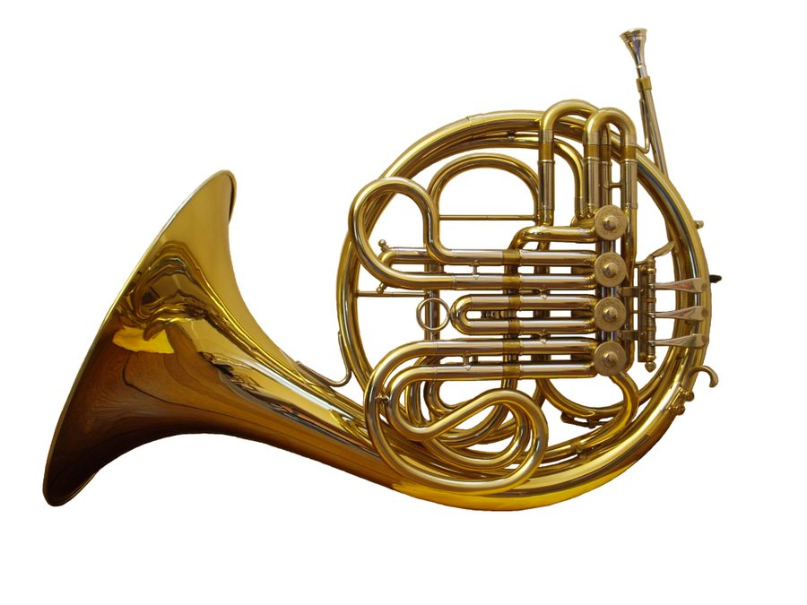
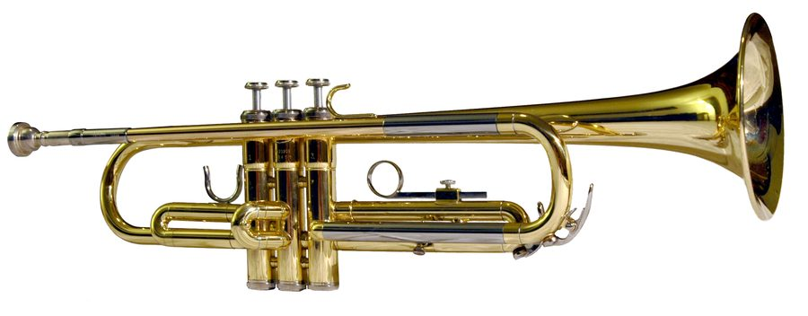

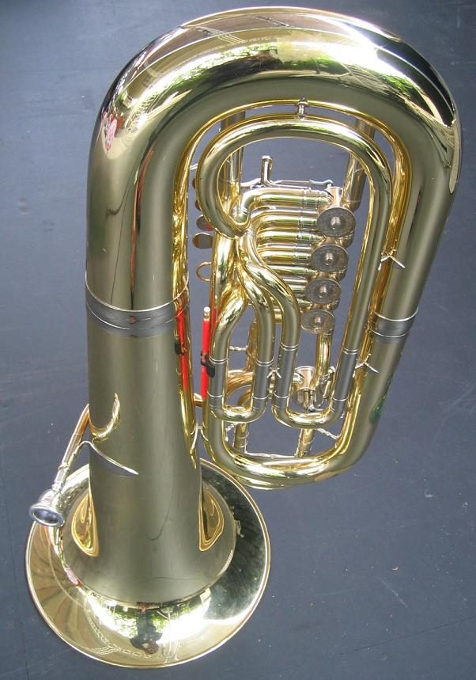
ハープ
47本の弦と、7つのペダルどの家族にも属さない、一人だけの存在です。弦を指で弾く撥弦楽器ですが、半音は「ペダルで弦を短くする」ことで作ります。このページの主役は、そのダブルアクション・ペダルの仕組みです。
音の出る仕組み
弦には色の目印があります。Cの弦は赤、Fの弦は青（または黒）。47本も弦がある中で、演奏者はこの色を頼りに自分の位置を知ります。低い音の弦は金属の巻線、高い方は腸線（ガット）が中心です。
音で聴く
ハープには試聴プレイヤーがありません。University of Iowa Musical Instrument Samples のコレクションにハープのサンプルは存在しないため（索引と楽器一覧で確認済み）で、別出典が確認できたら次回足します。
弾いて試す
ハープとティンパニの試奏台
ペダルの仕込みを変えて弦を鳴らし、グリッサンドがどう響くか、書いた和音がハープで弾けるかどうか（点検）を、その場で試せます。ファミリーにはタブの無いティンパニの画面も入っています——下のボタンで、ティンパニの画面に切り替えて下の試奏台へ移動できます。試奏台はこのページの中に置いてあるので、そのまま下へスクロールしても使えます。音は、最初に画面をタップしたあとに鳴ります。
試奏台：まこりん作（1枚で動くHTMLを、このページの中に組み込みました）。
試奏台：まこりん作
ハープとティンパニの試奏台
音域やペダルの決まりは、管弦楽法の本で一般的に教えられている内容を、作り手（AI）の知識から書いたものです。本そのものとは照らし合わせていません。時間の目安は、奏者や楽器で変わります。
構造の図——ダブルアクション・ペダル
図1｜ハープの全体と、ペダルの並び
足元の7ペダル——左足3つ、右足4つ
ペダルは担当する音名ごとに1つずつで、その音の全オクターブに同時に効きます。たとえばCのペダルを踏めば、47本の中のすべてのCの弦が一斉に半音上がります。だから転調のたびに、踏み替えの「置き場所」を設計しておく必要があります。
図2｜ディスクとフォーク——1段で半音、2段でもう半音
ペダルを踏むと、柱の中のロッドが上がって、ネックの上のディスクが回ります。ディスクには2組のフォーク（プロング）が付いていて、回るたびに弦を挟んで「鳴る長さ」を短くします。1段目で♭→♮、2段目で♮→♯。これが「ダブルアクション」の名前の由来です。
調律とグリッサンド
弦そのものの調律はC♭長調（ペダル全開放）。ペダルを全て1段目に入れると各音が♮になって変ホ長調の音階が得られます——これが実務の標準位置です。2段目まで入れると全音が♯になります。
グリッサンドは「速い音階」ではなく、ペダルの仕込みが本体です。異名同音の裏技もあり、たとえばEの弦をE♯にしておけば、Fの弦と合わせて同じFの音を2本の弦で交互に弾けます——同じ弦の速い反復が苦手なハープならではの解決法です（ビドール）。
音域チャート——ピアノと並べて
ハープの音域はC♭1〜G♯7（47弦）。ビドール（1904）は上限をG♭と記しますが、現代の標準はG♯7です。ピアノは88鍵（A0〜C8）で、ハープより少し広い範囲をカバーします。
比較——ハープとピアノ
| 項目 | ハープ | ピアノ |
|---|---|---|
| 音を出すもの | 弦47本を指で直接弾く | 鍵盤88鍵→ハンマーが弦を打つ |
| 半音の作り方 | ペダルで弦を短くする（全オクターブ同時） | 黒鍵が担当する |
| 得意 | グリッサンドとアルペジオが主役。和音は原則アルペジオで | 速い同音反復、半音階、細かい装飾 |
| 苦手 | 速い同音反復（同じ弦は弾くたび前の音を消す）。急な転調（ペダルの踏み替えが要る） | グリッサンドらしい滑らかさは出ない |
| 音の消え方 | ダンパーが無く、共鳴が自然に消えるのを待つ。減衰はギターのように速い | ダンパーペダルで止められる |
比較の勘所（原典から）
片手の和音は最大4音。奏者は第5指（小指）を使わないからです。和音は密に置き、手と手の間も空けすぎない。そして原則はアルペジオ——そうでない時だけ non arpeggiato と明記します。3人の原典がそろって同じ規則を置く、ハープ書法の第一条です。
ハープにはダンパーがありません。だから書き手は、共鳴が伝播して消えるまでの時間を残し、混濁を避けて書くこと。彼はハープを「人気のない大聖堂のオルガン」のように扱えと書いています。また、音階・アルペジオの綴りは♯系より♭系（C♭、G♭、D♭）を選ぶのが鉄則です。
残響の長さは音域で変わります。中・低音域は残響が長く、速い和声変化では前の和音を手で止める必要がある。速いフィギュレーションが明瞭になるのは高音域だけです。速いパッセージと細かい装飾は、高音域に置くのが安全です。
この楽器のルール——ヴォイシングと低音の置き方
ハープの和音は「密に置く」のが他の楽器と逆の原則です。一方で低音は残響が長く、速い曲では左手の置き方がそのまま濁りを決めます。下のLIL図には、左手の受け持つ低音区間に印を付けました。
和音は密に置く（close）。各手4音まで、手と手の間も空けすぎない。原則はアルペジオで、そうでない時だけ non arpeggiato と明記します。
速い曲では、左手はオクターブか単音だけに。でないと低音が「ピアノの最低音の和音のように唸って濁る」——ハープ版のローインターバルリミットです。
中・低音域は残響が長い。速い和声変化では、前の和音を手で止める必要がある前提で書きます。止める暇のない速さで低音の和音を替えないこと。
同音反復と速いフィギュレーションは、高音域だけが明瞭。音域ごとに「できること」が違うので、速い動きは高音域へ寄せるのがルールです。
図｜ローインターバルリミット（ハープ版）——左手の低音は広く取る
色の付いた範囲が「置かない方がよい」低音側です。下限の目安は、米海軍の音楽教科書系の和声学テキスト「Low Interval Limits」の伝統的な制限（最下声部とその上の声部の間）で、絶対の法則ではなく目安です。ハープでは残響の長さが濁りをさらに強めるため、速い曲ほど左手はオクターブ／単音に絞ります。破線の帯は、左手の低音区間です。
写真で見る

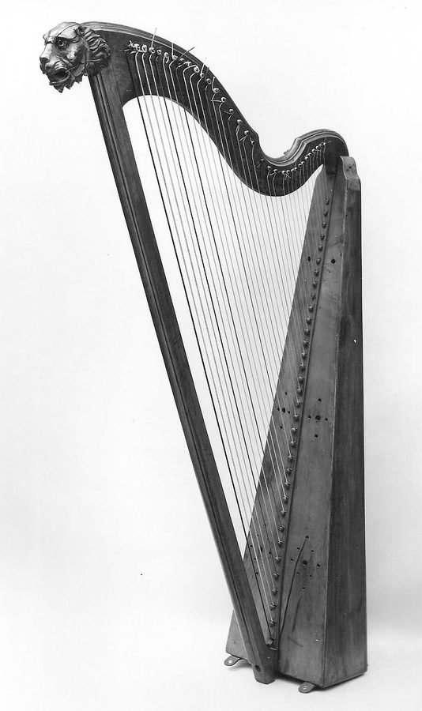
学習——楽典・和声の土台
ルールの「なぜ」を置く場所各楽器ページのルール（ヴォイシングとローインターバルリミット）の土台になる、楽典と和声学の最小限をここに分けました。楽器の話ではなく、「音と音の関係」の話です。
なぜ低音は濁るのか——ローインターバルリミットの仕組み
音程は「2音の周波数の比」ですが、耳が感じる近さは周波数の差にも左右されます。音が低くなるほど、同じ音程でも2音の周波数の差は小さくなり、耳には濁り・うなりとして聞こえます。だから低音域では声部の間隔を広く取る——これがローインターバルリミット（低音域の音程下限）です。
実務の合言葉は「バス譜表の真ん中の線より下では、間隔は協和に、できれば10度・5度・8度で」。下の図の下限は、米海軍の音楽教科書系の和声学テキスト「Low Interval Limits」の伝統的な制限（最下声部とその上の声部の間）で、絶対の法則ではなく目安として使います。
図｜ローインターバルリミット——音程ごとの下限
読み方：たとえば「3度」の行は、最下声部が c より下にある時、その上の声部との間に3度を置かない方がよい、という意味です。5度・8度は低音でも比較的自由に置けます。
和音の配置の原則
和音は低音で広く、高音で自由に。低い声部ほど間隔を開け、高い声部ほど密に置いても濁りません。LILは、この原則を音程ごとの下限として数字にしたものです。
フォルテで中音域を空けない。低音と高音だけが鳴って真ん中が抜けた配置は、フォルテで特に貧しく聞こえます。強く鳴らす時ほど、中音域を埋める声部を用意します。
下限は「最下声部と、その上の声部」の間の話。上の声部同士の間隔まで一律に縛るものではありません。まず一番下の2声の距離を点検するのが、LILの使い方です。
この先の進み方
このページに置いたのは、ルールを使うための土台だけです。和音の種類や声部進行の型（禁則を含む楽典・和声学の本体）と、実際の楽譜で点検する実習は、姉妹ページの「理論の土台」と「ヴォイシング・チェック20項目」にまとめてあります。